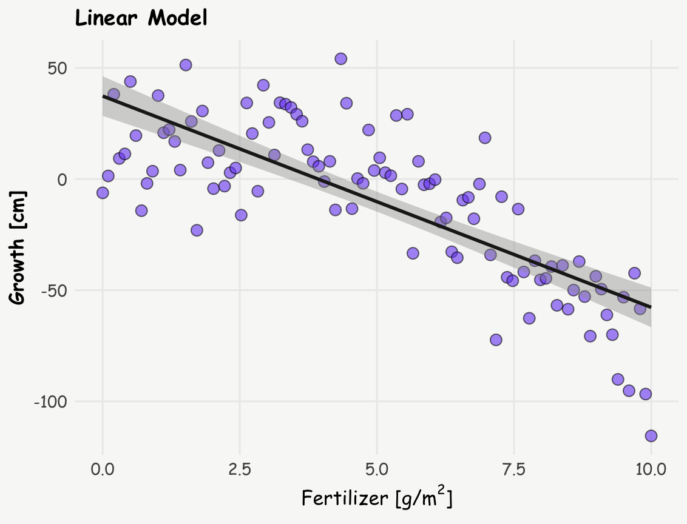
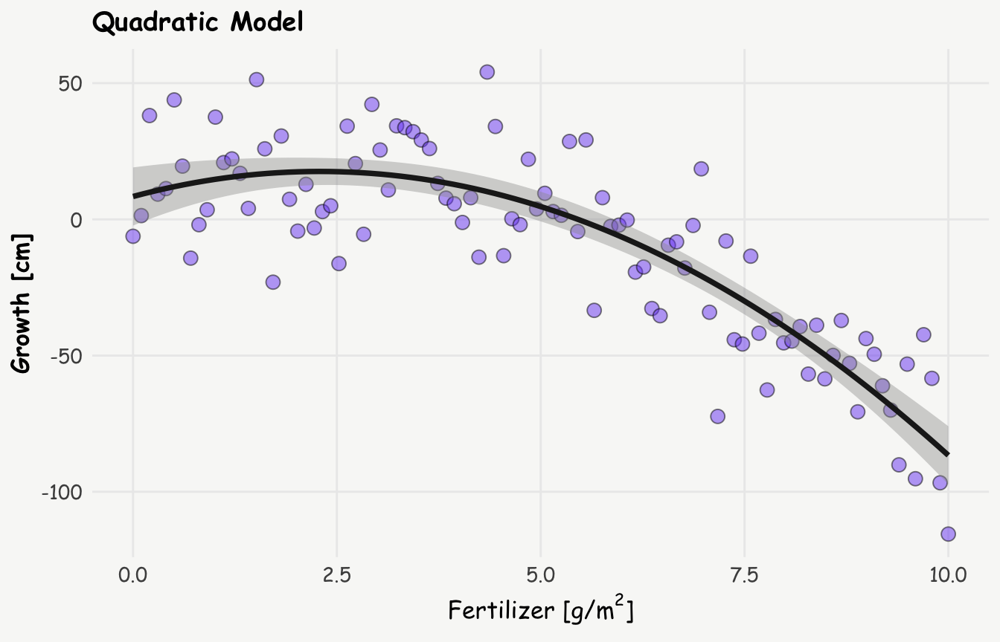
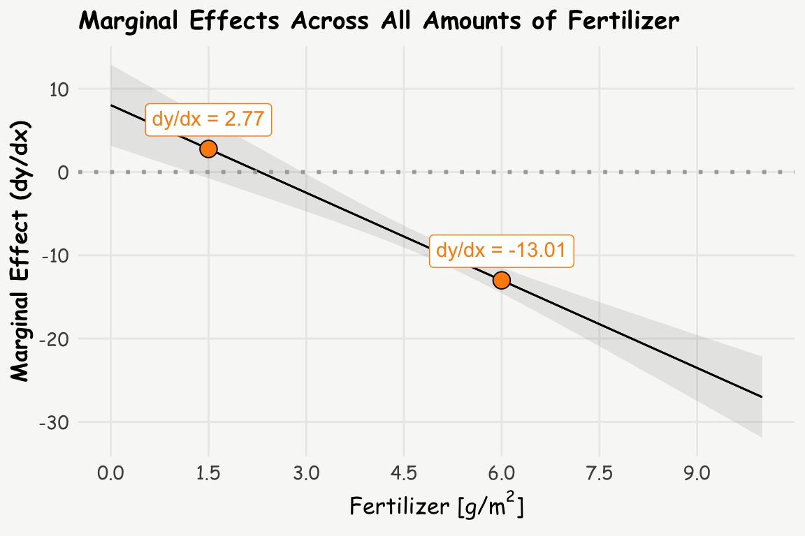

set.seed(123)
x <- seq(0, 10, length.out = 100) # Fertilizer amount
y <- -2*x^2 + 10*x + 5 + rnorm(100, sd = 20) # Plant growth
plant_data <- data.frame(fertilizer = x, growth = y)Unravelling Marginal Effects
Raw parameter estimates from complex models, particularly those involving non-linear terms or interactions, are often challenging to interpret and may lack real-world context. This difficulty is especially pronounced for non-statisticians, who are often the ones tasked with translating results into practical solutions. In this regard, marginal effects can be useful, as they provide a clearer and more interpretable view of the relationships within a statistical model.
The term “marginal effects” carries slightly different meanings across different fields and contexts. For an in-depth exploration of this terminology, I recommend to read Andrew Heiss’s blog post. For the following, I’ll adhere to the following general concept: Marginal effects illustrate how a one-unit change in the independent variable influences the dependent variable, while holding other factors or covariates constant. This concept manifests differently across model types:
- Linear Regression Models: Here, coefficients themselves already represent (constant) marginal effects, due to the linear nature of the relationship. For instance, in a model predicting salary based on years of experience, a coefficient of 500 for experience indicates that each additional year increases salary by 500 units.
- Non-linear Models: In models such as logit, probit, Poisson, or those involving quadratic/ polynomial terms, marginal effects are not constant. They must be calculated for specific values of the independent variable. For example, in a logistic regression model predicting diabetes based on glucose levels, the marginal effect represents the change in the probability of diabetes occurring for a one-unit change in glucose level. It’s worth noting that in such models, the regression coefficient itself represents the log odds ratio rather than the change in actual probability.
In the following sections, I’ll explore two examples of how to enhance the interpretability of model outputs using marginal effects and the marginaleffects package.
Note I: While researching marginal effects, I found two particularly insightful blog posts - one by an unnamed author from the University of Virginia and another by Andrew Heiss. Both offer comprehensive descriptions of the concept. However, in this post, I’ve attempted to articulate the idea behind marginal effects in my own words, hoping to provide a perspective that might be helpful to others, including my future self.
Note II: There are several other excellent R packages for calculating marginal effects, such as margins and emmeans. However, for the sake of simplicity and consistency, I chose not to include them in this post.
Unraveling Curved Relationships: Marginal Effects Between Continuous Variables
When dealing with continuous variables for both predictors and outcomes, marginal effects become a powerful tool for interpretation of non-linear models like quadratic relationships, where raw regression estimates are challenging to interpret. Let’s explore this concept using a synthetic data set on plant growth and fertilizer. The data follows a natural inverted U-shaped curve that’s commonly observed in agriculture: plants respond positively to fertilizer up to an optimal point (around 3 g/m²), after which excess nutrients become toxic and inhibit growth, demonstrating a classic quadratic relationship.
Data set
Linear vs. Quadratic: Which Fits Better?
First, let’s compare a linear and a quadratic model to see which better describes the data.
R Code
# plot
ggplot(plant_data, aes(x = fertilizer, y = growth) ) +
geom_point(color = 'black', fill = '#7950f2', alpha = 0.6, shape = 21, size = 3) +
stat_smooth(method = "lm", formula = y ~ x, linewidth = 1, color = '#1e1e1e') +
labs(title = 'Linear Model',
x = expression(paste("Fertilizer [g/", m^2, ']')), y = "Growth [cm]")
# linear model
linear_model <- lm(growth ~ fertilizer, data = plant_data)
summary(linear_model)
Call:
lm(formula = growth ~ fertilizer, data = plant_data)
Residuals:
Min 1Q Median 3Q Max
-57.819 -12.129 0.943 14.774 58.039
Coefficients:
Estimate Std. Error t value Pr(>|t|)
(Intercept) 37.3188 4.4926 8.307 5.6e-13 ***
fertilizer -9.5028 0.7762 -12.243 < 2e-16 ***
---
Signif. codes: 0 '***' 0.001 '**' 0.01 '*' 0.05 '.' 0.1 ' ' 1
Residual standard error: 22.63 on 98 degrees of freedom
Multiple R-squared: 0.6047, Adjusted R-squared: 0.6006
F-statistic: 149.9 on 1 and 98 DF, p-value: < 2.2e-16R Code
# plot
ggplot(plant_data, aes(x = fertilizer, y = growth) ) +
geom_point(fill = '#7950f2', alpha = 0.5, shape = 21, size = 3) +
stat_smooth(method = "lm", formula = y ~ x + I(x^2), linewidth = 1.3, color = '#1e1e1e') +
labs(title = 'Quadratic Model',
x = expression(paste("Fertilizer [g/", m^2, ']')), y = "Growth [cm]")
# quadratic model
quadratic_model <- lm(growth ~ fertilizer + I(fertilizer^2), data = plant_data)
summary(quadratic_model)
Call:
lm(formula = growth ~ fertilizer + I(fertilizer^2), data = plant_data)
Residuals:
Min 1Q Median 3Q Max
-48.136 -11.977 -0.533 13.549 43.891
Coefficients:
Estimate Std. Error t value Pr(>|t|)
(Intercept) 8.3982 5.3777 1.562 0.12162
fertilizer 8.0266 2.4855 3.229 0.00169 **
I(fertilizer^2) -1.7529 0.2405 -7.289 8.43e-11 ***
---
Signif. codes: 0 '***' 0.001 '**' 0.01 '*' 0.05 '.' 0.1 ' ' 1
Residual standard error: 18.29 on 97 degrees of freedom
Multiple R-squared: 0.7446, Adjusted R-squared: 0.7393
F-statistic: 141.4 on 2 and 97 DF, p-value: < 2.2e-16The quadratic model, as expected — since it’s built on a quadratic relationship, yields a lower residual standard error, indicating a better fit to the data. This improved fit suggests a more complex relationship between fertilizer and plant growth: rather than a simple, monotonic decline, the data indicate that growth initially increases with fertilizer use, reaching a peak around 3 g/m², after which it starts to decline.
Quadratic term: raw vs. orthogonal polynomials
When fitting a quadratic or higher-order polynomial model in R, there are two common ways to include polynomial terms: using x + I(x^2) or poly(x, 2). Both approaches capture quadratic relationships, but they differ significantly in how the terms are constructed.
x + I(x^2)(equivalent topoly(x, 2, raw = TRUE)) includes the raw polynomial terms directly—i.e., the variable \(x\) and its square \(x^2\). These terms are generally easier to interpret — at least in theory — since the coefficients correspond directly to the linear and quadratic parts of the model. (Though in practice, I still find their meaning tricky to pin down — the reason why marginal effects are so useful.). However, raw polynomial terms tend to be highly correlated, which can introduce multicollinearity and affect the reliability of coefficient estimates.poly(x, 2)by default creates orthogonal polynomials—transformed versions of the original terms that are statistically uncorrelated. This helps mitigate multicollinearity, but comes at the cost of interpretability: the coefficients no longer directly correspond to powers of the predictor.
A more nuanced discussion of the trade-offs and appropriate use cases for each approach can be found on CrossValidated.
However, in the current context of marginal effects, the choice between them is less important, since both methods yield identical marginal effects.
Interpreting Quadratic Relationships: The Power of Marginal Effects
Interpreting the coefficients in quadratic or higher-order polynomial models — whether based on raw or orthogonal terms — can be tricky and often unintuitive. This is where marginal effects, specifically Marginal Effects at Representative Values (MER), come into play. We can calculate the slope (or tangent) at different amounts of fertilizer to better understand the relationship, and these slopes are nothing else than marginal effects. Let’s calculate the marginal effects at 2 g/m² and 6 g/m² using the slopes() function from the marginaleffects package:
slopes(quadratic_model, newdata = datagrid(fertilizer = c(1.5, 6))) -> s; s
Term fertilizer Estimate Std. Error z Pr(>|z|) S 2.5 % 97.5 %
fertilizer 1.5 2.77 1.80 1.54 0.123 3.0 -0.753 6.29
fertilizer 6.0 -13.01 0.79 -16.46 <0.001 199.8 -14.558 -11.46
Type: response
Columns: rowid, term, estimate, std.error, statistic, p.value, s.value, conf.low, conf.high, fertilizer, predicted_lo, predicted_hi, predicted, growth Now, let’s visualize these slopes on the plot from above (inspired by Andrew Heiss):
R Code
e <- summary(quadratic_model)$coef # all coefficients of quadratic model
x_15 <- s$fertilizer[1] # x: representative value of fertilizer = 1.5
b_15 <- s$estimate[1] # b: slope at representative value of fertilizer
y_15 <- e[1,1] + e[2,1]*x_15 + e[3,1]*(x_15^2) # y: growth at representative value of fertilizer
intercept_15 <- b_15 * (-x_15) + y_15 # b0: intercept
x_6 <- s$fertilizer[2] # x: representative value of fertilizer = 6
b_6 <- s$estimate[2] # b: slope at representative value of fertilizer
y_6 <- e[1,1] + e[2,1]*x_6 + e[3,1]*(x_6^2) # y: growth at representative value of fertilizer
intercept_6 <- b_6 * (-x_6) + y_6 # b0: intercept
d.annot <- data.frame(x = c(x_15, x_6),
y = c(y_15, y_6),
b = c(b_15, b_6),
i = c(intercept_15, intercept_6)
) %>%
mutate(label = paste0('dy/dx = ' , round(b, 2)))
ggplot(plant_data, aes(x = fertilizer, y = growth) ) +
geom_point(fill = '#7950f2', alpha = 0.3, shape = 21, size = 3) +
stat_smooth(method = "lm", formula = y ~ x + I(x^2), linewidth = 1, color = '#1e1e1e') +
geom_abline(data = d.annot, aes(slope = b, intercept = i),
linewidth = 1.1, color = 'darkorange') +
geom_richtext(data = d.annot, aes(x = x, y = y, label = label), color = 'darkorange', nudge_y = 7) +
geom_point(data = d.annot, aes(x = x, y = y), fill = 'darkorange', shape = 21, size = 4) +
scale_x_continuous(breaks = seq(0, 10, by=1.5)) +
#scale_y_continuous(limits = c(0,70)) +
labs(title = 'Marginal Effects at Representative Values (MER)',
x = expression(paste("Fertilizer [g/", m^2, ']')), y = "Grwoth [cm]")
This visualization helps to understand how the relationship between the amount of fertilizer and growth changes. The slope is positive at the amount of 1.5 g/m² but negative at 6 g/m², indicating a clear shift in the relationship.
Comprehensive View: Marginal Effects Across All Ages
To get a complete picture, we can calculate and plot the marginal effects (slopes) for all amounts of fertilizer using the plot_slopes() function:
R Code
plot_slopes(quadratic_model, variables = "fertilizer", condition = "fertilizer") +
geom_hline(yintercept = 0, color = 'darkgrey', linetype = 'dotted', lwd = 1) +
geom_richtext(data = d.annot, aes(x = x, y = b, label = label), color = 'darkorange', nudge_y = 3.5) +
geom_point(data = d.annot, aes(x = x, y = b), fill = 'darkorange', shape = 21, size = 4) +
scale_x_continuous(breaks = seq(0, 10, by=1.5)) +
labs(title = 'Marginal Effects Across All Amounts of Fertilizer',
y = 'Marginal Effect (dy/dx)', x = expression(paste("Fertilizer [g/", m^2, ']')))
Interpretation
The analysis reveals that:
At 1.5 g/m² of fertilizer: A one-unit increase in fertilizer (from 1.5 to 2.5 g/m²) is associated with an estimated 2.8 cm increase in plant growth.
At 6 g/m² of fertilizer: A one-unit increase in fertilizer (from 6 to 7 g/m²) is associated with an estimated 13 cm decrease in plant growth.
This shift from a positive to a negative relationship when increasing the amount of fertilizer illustrates that at lower levels (before the optimum), additional fertilizer promotes growth, and at higher levels (after the optimum), additional fertilizer reduces growth due to toxicity.
Beyond MER: Exploring MEM and AME
We’ve just looked at the concept of Marginal Effects at Representative Values (MER). But there’s more! Two other concepts can shed light on the data (depending on context and data, one or the other make more sense): MEM and AME. Let’s break these three down in more detail:
Marginal Effect at Representative Values (MER):
This represents the dy/dx at very specific, representative values of x (as for the amount of fertilizer of 1.5 g/m2 and 6 g/m2 above).
slopes(quadratic_model, newdata = datagrid(fertilizer = c(1.5, 6))) -> s; print.me(s)
Estimate Std. Error Pr(>|z|) CI low CI high
2.77 1.80 0.123 -0.753 6.29
-13.01 0.79 <0.001 -14.558 -11.46
Term: fertilizerMarginal Effect at the Mean (MEM):
This represents the dy/dx at the mean value of x (amount of fertilizer in the example above).
slopes(quadratic_model, newdata = "mean") -> s; print.me(s)
Estimate Std. Error Pr(>|z|) CI low CI high
-9.5 0.627 <0.001 -10.7 -8.27
Term: fertilizer
Average Marginal Effect (AME):
This is the mean of all observation-specific marginal effects. It’s calculated by determining dy/dx at each value of x and then taking the average. Based on the example above, this might not be very helpful though.
avg_slopes(quadratic_model) -> s; print.me(s)
Estimate Std. Error Pr(>|z|) CI low CI high
-9.5 0.627 <0.001 -10.7 -8.27
Term: fertilizer
Comparison: mean(dY/dX)Unravelling Logistic Regression and Marginal Effects
Logistic regression is a powerful and often used tool. The raw parameters represent log odds ratios, expressed as \(log(\frac{p}{1-p})\). Exponentiating these coefficients results in odds ratios \(\frac{p}{1-p}\), which is a common measure used in scientific studies. But what do these really mean in practical terms? The interpretation can be tricky, and it’s easy to conflate odds with probabilities. While it would be convenient if they were the same, they’re not – and this is where marginal effects shine.
Let’s explore this concept using the diabetes data from the github repository for plotly sample data sets. We’ll investigate how glucose levels and body mass index (BMI) — specifically values of 25 or higher, which are classified as overweight (coded as a binary variable) — are associated with the risk of developing diabetes. This example is simplified for illustration, and is simply used to provide insights into marginal effects in case of a binary coded outcome variable.
First, let’s prepare our data:
diab_data <- read.csv("https://raw.githubusercontent.com/plotly/datasets/master/diabetes.csv")
diab_data <- diab_data |>
rename_with(tolower) |>
mutate(diab = outcome,
bmi_fg = f_case_when(bmi < 25 ~ 'BMI < 25',
bmi >= 25 ~ 'BMI ≥ 25'))Lets build the model:
R Code
# plot: glucose
p1 <- ggplot(diab_data, aes(x = glucose, y = diab)) +
geom_point(fill = '#7950f2', alpha = 0.3, shape = 21, size = 2) +
stat_smooth(method="glm", color="black", se=TRUE, method.args = list(family=binomial), linewidth = 1) +
labs(title = 'Logistic Regression - Glucose',
y = 'Probability of Diabetes', x = 'Glucose') +
theme(axis.text = element_text(size = 9),
axis.title = element_text(size = 11))
# plot: BMI binary coded
p2 <- ggplot(diab_data, aes(x = bmi_fg, y = diab)) +
geom_jitter(width = 0.3, height = 0.05, fill = '#7950f2', alpha = 0.3, shape = 21, size = 2) +
stat_summary(fun = mean, geom = "point", size = 3.5, color = "black") +
geom_smooth(method = "glm", method.args = list(family = "binomial"), se = FALSE) +
labs(x = "BMI", y = "Probability of Diabetes", title = "Logistic Regression - BMI Flag") +
theme(axis.text = element_text(size = 9),
axis.title = element_text(size = 11))
p1+p2+plot_annotation(theme = theme(plot.background = element_rect(fill ="#f8faf7", color="#f8faf7")))
# logistic regression
logit_model <- glm(diab ~ glucose + bmi_fg, data = diab_data, family = 'binomial')
summary(logit_model)
Call:
glm(formula = diab ~ glucose + bmi_fg, family = "binomial", data = diab_data)
Coefficients:
Estimate Std. Error z value Pr(>|z|)
(Intercept) -6.738749 0.556312 -12.113 < 2e-16 ***
glucose 0.036174 0.003292 10.990 < 2e-16 ***
bmi_fgBMI ≥ 25 1.773580 0.378421 4.687 2.78e-06 ***
---
Signif. codes: 0 '***' 0.001 '**' 0.01 '*' 0.05 '.' 0.1 ' ' 1
(Dispersion parameter for binomial family taken to be 1)
Null deviance: 993.48 on 767 degrees of freedom
Residual deviance: 777.80 on 765 degrees of freedom
AIC: 783.8
Number of Fisher Scoring iterations: 5Lets look at the odds ratios:
exp(logit_model$coefficients) (Intercept) glucose bmi_fgBMI ≥ 25
0.001184128 1.036836499 5.891910246 Traditional interpretation:
- For each unit increase in glucose level, the odds of having diabetes increase by 4%.
- Individuals with a BMI of 25 or higher have odds of diabetes almost 6 times higher than those with a BMI below 25.
While these interpretations are technically correct, they’re not very intuitive. Many people, including myself, find odds ratios difficult to grasp and often conflate them with probabilities.
Therefore lets look at marginal effects, which offer a more accessible way to interpret our results. They show how changes in our predictors affect the probability (not odds!) of the outcome. First thing we could do, is to get individual risk differences: predict the probability of diabetes for a given subject based on their given glucose level, and the probability for one unit higher (+1), and calculate the difference between the two. Analogously for the binary variable, predict the probability of diabetes for each subject, once treating the subject to be overweight (BMI ≥ 25), and once below the threshold (BMI < 25), and take the difference thereof. We could do this by hand, but the comparisons() function from the marginaleffects does this for us (which is the analogue function to slopes() for the continuous relationship from above).
comparisons(logit_model, variable = 'glucose') -> rr.glucose
print.me(rr.glucose)
Estimate Std. Error Pr(>|z|) CI low CI high
0.00868 0.000684 <0.001 0.00734 0.01002
0.00418 0.000280 <0.001 0.00363 0.00473
0.00902 0.000921 <0.001 0.00722 0.01082
0.00463 0.000294 <0.001 0.00406 0.00521
0.00904 0.000821 <0.001 0.00743 0.01065
--- 758 rows omitted. See ?print.marginaleffects ---
0.00611 0.000413 <0.001 0.00530 0.00692
0.00843 0.000763 <0.001 0.00693 0.00992
0.00835 0.000749 <0.001 0.00688 0.00982
0.00871 0.000805 <0.001 0.00713 0.01029
0.00511 0.000320 <0.001 0.00449 0.00574
Term: glucose
Comparison: +1comparisons(logit_model, variable = 'bmi_fg') -> rr.bmi
print.me(rr.bmi)
Estimate Std. Error Pr(>|z|) CI low CI high
0.396 0.0630 <0.001 0.2722 0.519
0.106 0.0184 <0.001 0.0702 0.142
0.369 0.0947 <0.001 0.1836 0.555
0.120 0.0197 <0.001 0.0813 0.158
0.354 0.0508 <0.001 0.2541 0.453
--- 758 rows omitted. See ?print.marginaleffects ---
0.169 0.0240 <0.001 0.1214 0.216
0.276 0.0365 <0.001 0.2048 0.348
0.271 0.0357 <0.001 0.2009 0.341
0.298 0.0399 <0.001 0.2198 0.376
0.135 0.0210 <0.001 0.0936 0.176
Term: bmi_fg
Comparison: BMI ≥ 25 - BMI < 25The outputs of the comparisons() function shows for each individual the difference in predicted probability of current glucose, and for one glucose unit higher (+1), and the difference in probability treating the subject to be overweight (BMI ≥ 25) vs. non-overweight (BMI < 25).
Average Marginal Effects (AME)
Furthermore, to get a population-level perspective, we can average these individual effects from above using avg_comparisons()
avg_comparisons(logit_model, variable = 'glucose') -> a
print.me(a)
Estimate Std. Error Pr(>|z|) CI low CI high
0.00611 0.000368 <0.001 0.00539 0.00683
Term: glucose
Comparison: mean(+1)avg_comparisons(logit_model, variable = 'bmi_fg') -> b
print.me(b)
Estimate Std. Error Pr(>|z|) CI low CI high
0.251 0.0389 <0.001 0.175 0.327
Term: bmi_fg
Comparison: mean(BMI ≥ 25) - mean(BMI < 25)So what do these risk differences, or population averaged risk differences, tell us?
- On average, for each unit increase in glucose level, the probability of diabetes increases by 0.6 percentage points.
- For changing from a BMI below 25 to above 25, increases the probability of diabetes, again on average across all subjects, by 25% percentage points.
Note: If you prefer risk ratios instead of risk differences, you can easily add the argument comparison = "ratio" to the comparisons() function.
These marginal effects provide a much more intuitive interpretation than the raw parameter estimates (log odds ratios). They show how changes in the independent variables (glucose and BMI) influence the outcome probability of diabetes.
We can further refine our analysis by exploring Marginal Effects at the Mean (MEA) and Marginal Effects at Representative Values (MER).
Marginal Effects at the Mean (MEA)
If we don’t specify the variables argument, the comparisons()-function calculates marginal effects at the means of both predictors:
comparisons(logit_model, newdata = 'mean') -> c; print.me(c)
Term Contrast Estimate Std. Error Pr(>|z|) CI low CI high
bmi_fg BMI ≥ 25 - BMI < 25 0.27093 0.035738 <0.001 0.20089 0.34098
glucose +1 0.00835 0.000749 <0.001 0.00688 0.00982This gives us the marginal effects at the average glucose level of 120.9 and the more common BMI category (BMI ≥ 25). We can verify this result manually by changing glucose level from from 120.9 to 121.9 (+1)
p0 <- predict(logit_model, newdata = data.frame(glucose = 120.9, bmi_fg = 'BMI ≥ 25'), type = 'response')
p1 <- predict(logit_model, newdata = data.frame(glucose = 120.9 +1, bmi_fg = 'BMI ≥ 25'), type = 'response')
p1-p0 1
0.008338451 and for BMI changing from below 25 to above 25, keeping glucose level constant at the mean of 120.9:
p0 <- predict(logit_model, newdata = data.frame(glucose = 120.9, bmi_fg = 'BMI < 25'), type = 'response')
p1 <- predict(logit_model, newdata = data.frame(glucose = 120.9, bmi_fg = 'BMI ≥ 25'), type = 'response')
p1-p0 1
0.2703858 Interpretation:
- For someone who is overweight (BMI ≥ 25), with increasing glucose level from 120.9 compared to 121.9 increases the probability of diabetes by 1 percentage point.
- For someone with a glucose level of 120.9, changing from a low BMI to a BMI above 25 increases the probability of diabetes by 27 percentage points.
Marginal Effects at Representative Values (MER)
We can also examine how marginal effects change across different glucose levels:
comparisons(logit_model, variable = 'bmi_fg',
newdata = data.frame(glucose = seq(50, 150, by=10))) -> c
print.me(c)
Estimate Std. Error Pr(>|z|) CI low CI high
0.0337 0.00922 <0.001 0.0156 0.0517
0.0473 0.01149 <0.001 0.0248 0.0699
0.0660 0.01406 <0.001 0.0385 0.0936
0.0910 0.01688 <0.001 0.0579 0.1241
0.1234 0.01999 <0.001 0.0843 0.1626
0.1640 0.02363 <0.001 0.1177 0.2103
0.2122 0.02838 <0.001 0.1565 0.2678
0.2655 0.03496 <0.001 0.1970 0.3340
0.3193 0.04366 <0.001 0.2337 0.4049
0.3669 0.05406 <0.001 0.2610 0.4729
0.4012 0.06527 <0.001 0.2733 0.5291
Term: bmi_fg
Comparison: BMI ≥ 25 - BMI < 25R Code
plot_comparisons(logit_model, variable = 'bmi_fg',
condition = list("glucose" = seq(50, 150, by=10))) +
geom_point(data = data.frame(glucose = c$glucose, est = c$estimate), aes(x = glucose, y = est),
fill = 'darkorange', shape = 21, size = 4) +
labs(title = 'Marginal Effects at Representative Values (MER)',
y = 'Risk Difference \n p(BMI ≥ 25) - p(BMI < 25)',
x = 'Glucose')This analysis suggests that the risk difference increases with increasing glucose levels.
By incorporating marginal effects into our analysis of logistic regression models, we gain a much richer and more intuitive understanding of our data. This approach allows us to communicate complex statistical relationships in terms of probability changes, which are far more accessible to a general audience. Remember, while odds ratios have their place in statistical analysis, marginal effects offer a powerful tool for interpretation and communication in many real-world scenarios.